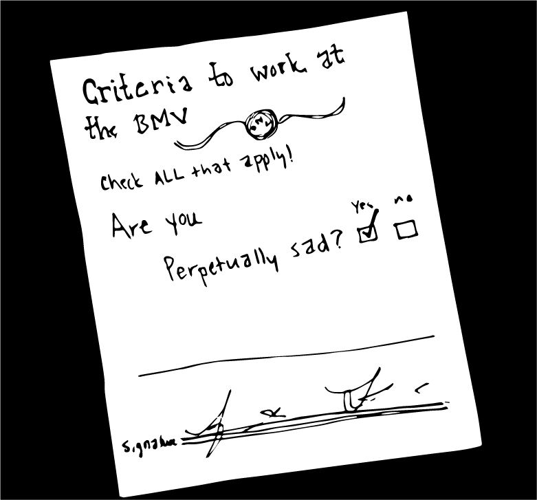

I went to the BMV today and there was a sign on the wall that said, “If you hit an employee, you will be fined $100.” The lighting was a next level sort of fluorescence that made everyone look seasick. The BMV itself was located in the basement in the back of a respectable government building downtown. I walked inside thinking, “Oh, this building is quite nice looking. This BMV can’t be so bad! It won’t be like all of the others that have scarred me for life.”
I asked the guard at the front desk where the BMV was because there was really no indication. The guard was pretty normal but her face got kind of sad when she heard my question. She pointed to a back corner. “Take the steps behind that wall and then walk to the back and then turn left and you’ll see it.”
When I got around the wall, I noticed that there was hazard tape around the escalator, which explains why she instructed me to take the stairs. I hoped that it wasn’t a bad omen and made my way to the basement. There were a couple more twists and turns than the guard had mentioned.
“Shit I hope I didn’t make a wrong…oh.”
One could not mistake the sad people behind the glass in the BMV room. People housed in a BMV are the saddest people on the planet. You walk through the doors and the air is so heavy with anxiety that it makes your entire face droop.
I realize that driving and all of the protocol around it is stressful, but it’s not as stressful as a hospice or Disney World. I think what sets the BMV apart from other inherently sad places is that people neglect to treat it as a sad thing that needs assistance in order to make people exposed to it less sad. Of course, people in a hospice are there because they are going to die soon, so it is the job of a special group of people to make it as comfortable and friendly as possible. Disney World is a container that traps fun inside of it and refuses to let any fun out, providing a constant reminder that it’s trying really hard to avoid how awful the outside world is. It charges a million dollars per person because it recognizes that if the wrong people infiltrate, the atmosphere could easily pivot into a William Burroughs-esque wasteland.
You don’t have to pay anything to walk into the BMV. And no one there is trying to make your experience enjoyable.
I staggered onto the sad side of the glass. I just wanted to get my Ohio license transferred to Illinois, since I’ve been living here for about two years. At this point, I was immensely regretting my decision to be responsible. There was no immediate reason to get an Illinois license. I don’t drive here. But I’d already subjected myself to the awful conditions around me, and the thought of leaving and coming back again was more unbearable than just standing in line. No one would look at each other. People wove in a disheveled stream up to the counter and to each station where an employee stood waiting to give them their bad news, because somehow at the BMV, every news is bad news.
How many years do you have to spend in prison before you’re allowed to work at the BMV? They all seem to have spent some time behind bars: they are rough around the edges in a way that most people aren’t. You also have to be a master of poker face. Please message me if you have ever managed to make someone who works at the BMV smile.
The sign that warns those in line that they’ll be fined $100 for hitting an employee is absolutely necessary. It’s not that the employees are obnoxious or annoying: it’s that the customers are generally awful and want attention, which BMV employees refuse to give. If you forget a document, step out of line. No one is going to help you.
When it was my turn and the woman behind the desk told me I’d need to take a written driving test, I started stumbling through a response, but by the time I’d said “how,” she’d grabbed four papers and an awfully long book to study and she’d written instructions on the back.
“You can take it now if you want.”
I’m not sure if I would’ve passed that test. At that point, I’d encountered enough depressing material to go home, take a nap, and write a pretty solid story. I felt accomplished without getting anything out of my trip that I’d gone there for in the first place.
“Uh, I’ll come back and take it another time.” I grabbed the papers and got out of there as quickly as my legs would carry me. Legs are great! You can use them without asking the BMV if it’s okay. Maybe I’ll just stick with legs things from now on.
